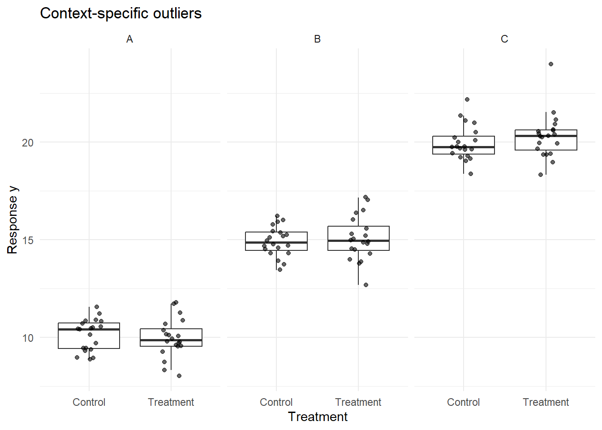
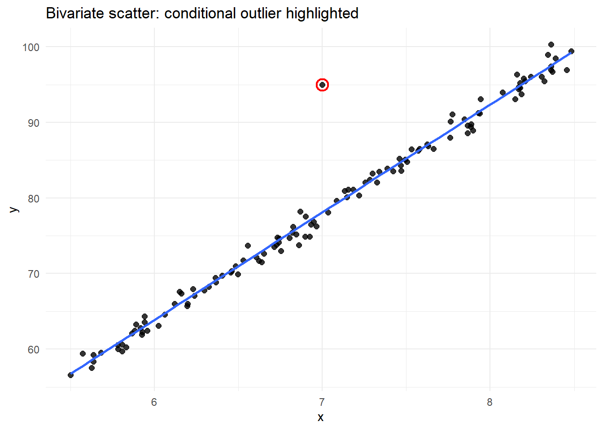

17 Tool 1: Outliers
17.1 Tool #1: Assessing Potential Outliers
This section introduces the first core tool of ante hoc Data Exploration Toolkit: assessing potential outliers. The goal is not to justify a data point’s immediate removal, but rather to flag and understand why an observation is unusual before any modeling decisions are made. Throughout this section, outliers are treated as diagnostic signals rather than problems to be fixed,following a simple guiding principle:
Outlier rules guide scrutiny; they do not justify removal.
17.2 What is an outlier?
A commonly cited definition is:
“…an outlier is an observation that lies outside the overall pattern of a distribution.” (Moore & McCabe, 1999)
This definition is intentionally broad and inherently univariate. It tells us where an observation sits relative to others—but not why it is unusual, nor what should be done about it. Perhaps a more operational –but more vague– definition is that of Zuur et al. (2010):
“…an observation that has a relatively large or small value compared to the majority of observations”
17.3 What causes outliers?
Outliers arise for many reasons (any number of data-generating processes), including, but not limited to:
- extreme relative to distributional assumptions
- measurement error
- error during data entry
- extremely rare but biologically plausible (so called Black Swan events)

17.4 Types of outliers
A useful first distinction to make in our discussion of outlier detection is whether an observation is unusual:
- In a single variable (univariate outlier), or
- Only when variables are considered jointly (multivariate outlier)
These are conceptually different problems and require different tools.
17.5 Univariate Outliers
Univariate outliers occur along a single dimension (i.e. in a single variable). For example, a body size measurement that is much larger than most others. Such univariate outliers should never be removed automatically. Their role in ante hoc exploration is to flag observations that deserve closer inspection. So, how can we identify univariate outliers? Univariate outliers can be flagged using two approaches:
- Statistical rules: rules depend on assumptions and sample size
- Expert judgment: assessment that relies on domain knowledge
Both approaches have advantages and limitations. Statistical rules can be fragile with small samples, while expert judgment can be applied inconsistently over time and across contexts.
17.5.1 Graphical approaches to univariate outliers
Before modeling, graphical inspection provides an extremely valuable first pass at outlier detection. All of these methods are subjective but effective for identifying values that warrant extra scrutiny. Because these myriad approaches essentially allow you to see the same dimensions in your dataset from slightly different perspective, we do not go all of the graphing types. Here are a few useful graphing types for your reference:
17.5.2 Tukey Box Plots
Tukey-style box plots are based on quantiles, not distributional assumptions. Traditional Tukey-style boxplots, which you will find in several R packages, have several core features:
- The interquartile range (IQR), or the difference between the 75% precentile (Q3) and the 25% percentile (Q1):
\[ \text{IQR} = Q_3 - Q_1 \]
- Whiskers extending to \(1.5 \times \text{IQR}\)
- Points beyond this threshold flagged as outliers
- Points beyond \(3 \times \text{IQR}\) sometimes flagged as extreme outliers
These cutoffs are conventional and not inferential. They provide a rule of thumb; they do not provide a statistical test. (You should see a theme: use outlier tests to flag values for extra scrutiny.)
::: {callout-note collapse=true icon=false} ## Tukey-style boxplots and non-normal data: do not worry! Tukey-style boxplot whiskers are nonparametric; that is, they rely on quantiles (IQR), which are order statistics, and not distributional assumptions. Because outlier flagging at the lower bound is based on ranks, departures from normality are acceptable. :::
17.5.3 Conditional Boxplots
Conditional boxplots extend the univariate, Tukey-style boxplot by stratifying the data by a grouping factor (e.g., site, treatment, time). These plots are especially useful for diagnosing heterogeneity across groups and identifying where flagged values originate. At first, the simplicity of these plots may give the impression that they are not useful, but you will quickly find that piecing together many of these visualizations can help uncover subtle issues with your data.
17.5.4 Warnings about detecting univariate outliers from visual inspection
Rules of outlier detection must be interpreted very cautiously, especially if univariate datesets exhibit small sample sizes or skewed (i.e. non-normal) distributions. For example, data drawn from a Gamma distribution—bounded at zero and right-skewed—may naturally produce values flagged by Tukey’s rule even when no anomaly is present.
Univariate screening should therefore be viewed as a question-generating step, not an answer-generating one.
17.6 Multivariate Outliers
Multivariate outliers occur when an observation is unusual in combination across variables, even if it appears unremarkable in any single variable. These are common in real datasets and often more consequential than univariate outliers. Because they depend on covariance structure (how one variable relates to another), multivariate outliers are invisible to univariate screening methods.
Consider this example:


The Tukey-style boxplot did not flag outliers in either of the univariate dimensions. But, given the bivariate scatterplot at right, there is clearly a single value that seems to fall outside of the joint data distribution. This is why we need additional tools to help us flag potentially problematic values when dealing with multivariate data (which is probably the norm).
17.7 Mahalanobis Distance: Identifying Multivariate Outliers
Most ecological and biological datasets are inherently multivariate. A point may fall near the center of each marginal distribution yet be extreme in joint space. One tool that we can use is Mahalanobis Distance, which is a standard tool for identifying multivariate outliers because it accounts for covariance among variables. Conceptually, it measures distance from the multivariate centroid.
NoteWhat the Mahalanobis distance means (plain language)
The Mahalanobis distance tells us how unusual a data point is when we consider several variables together.
\[ D^2 = (x - \mu)^T \Sigma^{-1} (x - \mu) \]
Think of it this way:
- \(x\) = the values for one observation (e.g., oxygen and temperature at one site)
- \(\mu\) = the average values across all observations
- \((x - \mu)\) = how far that observation is from the “typical” point
- \(\Sigma^{-1}\) = a correction that accounts for different units and correlations between variables
- \(D^2\) = a single number summarizing how extreme the observation is given the relationships in the data
A point can look reasonable on its own but still have a large Mahalanobis distance if it breaks the usual relationship between variables.
That’s why Mahalanobis distance is useful for finding multivariate (conditional) outliers, not just extreme values.
In practice, this can be implemented using existing R packages (e.g., stats::mahalanobis). For the dataset plotted above, the code here correctly flags the odd data point (complete, reproducible example):
library(tidyverse)
set.seed(123)
n <- 120
xy <- tibble(
x = runif(n, min = 5.5, max = 8.5)
) %>%
mutate(
y = 14 * x - 20 + rnorm(n(), mean = 0, sd = 1)
) %>%
add_row(x = 7.0, y = 95.0) %>%
mutate(is_conditional_outlier = row_number() == n())
# --- Mahalanobis distance (stats::mahalanobis) ---
X <- as.matrix(xy %>% select(x, y))
md <- stats::mahalanobis(X, center = colMeans(X), cov = stats::cov(X))
# Cutoff: chi-square quantile with df = 2 (x and y)
cut <- stats::qchisq(0.975, df = 2)
xy <- xy %>%
mutate(
md = md,
md_outlier = md > cut
)
# Which rows are flagged?
xy %>% filter(md_outlier) %>% select(x, y, md, md_outlier, is_conditional_outlier)# A tibble: 1 × 5
x y md md_outlier is_conditional_outlier
<dbl> <dbl> <dbl> <lgl> <lgl>
1 7 95 86.9 TRUE TRUE As with univariate methods, flagged points should prompt investigation—not automatic exclusion.
In the next section, we will apply the ante hoc Data Exploration Toolki to a real dataset. This example will showcase outlier detection but will also demonstrate how to apply some of the other tools in this Toolkit.